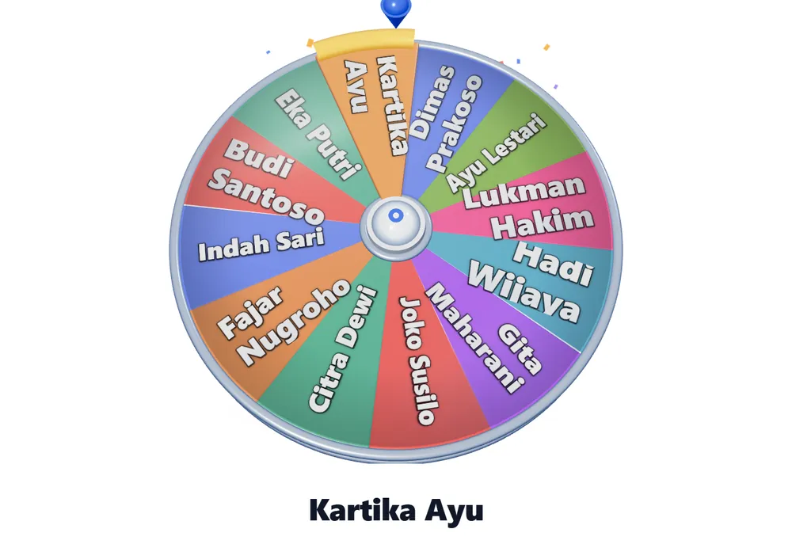

Beranda › Cara mengundi siswa
Cara mengundi nama siswa di kelas tanpa drama
Mengundi terdengar sepele, tetapi di kelas 30 siswa sering berubah jadi perdebatan: ada yang merasa selalu kena, ada yang merasa pilihannya tidak adil. Halaman ini membandingkan lima cara mengundi yang biasa dipakai guru, lalu menunjukkan cara mana yang paling cepat dan paling sulit dibantah.
Buka roda nama sekarang gratis, tanpa daftar, bisa offline

Lima cara mengundi dan masalahnya masing-masing
| Cara | Kelebihan | Masalah |
|---|---|---|
| Kertas undian dilipat | Tidak butuh alat | Butuh 3–5 menit, kertas bisa hilang, nama terlewat |
| Menunjuk nomor absen | Paling cepat | Sangat mudah dianggap tidak adil |
| Aplikasi roda nama | Cepat, hasil terlihat semua siswa | Butuh HP atau proyektor |
| Kocok kartu nama | Terasa “nyata” | Butuh kartu fisik, sulit diulang |
| Generator angka acak | Adil | Siswa harus hafal nomor absennya |
Masalah utamanya bukan alat, melainkan kepercayaan. Cara apa pun yang tidak terlihat prosesnya akan dicurigai. Karena itu pilihan yang paling jarang menimbulkan protes adalah yang menampilkan proses secara terbuka — roda berputar di depan kelas, semua siswa melihat nama-nama berputar sebelum berhenti.
Cara yang paling jarang diprotes: roda nama di depan kelas
Tempel daftar nama sekali, lalu putar. Roda berhenti dengan sendirinya dan pemenang ditampilkan dalam teks besar sehingga siswa di baris belakang tetap bisa membaca. Hasilnya diambil dari generator acak kriptografis peramban, bukan dari urutan atau nomor tertentu.
Coba rodanya langsung di sini
Tempel daftar nama (satu nama per baris), tekan Putar, dan roda akan berhenti pada satu nama.
Alat di atas bisa langsung dipakai — tidak perlu pindah halaman. Bila layar terlalu sempit, buka di tab penuh.
Empat langkah memakainya di kelas
- Siapkan daftar nama. Tempel dari daftar absen, satu nama per baris. Daftar tersimpan di peramban, jadi besok tidak perlu mengetik ulang.
- Tampilkan di proyektor (opsional). Roda bekerja baik di layar HP maupun proyektor kelas.
- Putar dan biarkan berhenti. Jangan hentikan manual — justru proses berhentinya yang membuat hasil terasa sah.
- Bagikan hasilnya. Tekan “Bagikan hasil” untuk mengirim kartu pemenang ke grup WhatsApp kelas, sehingga tidak ada yang bisa menuduh hasil diubah.
Tiga situasi yang paling sering muncul
Siswa yang sama terpilih dua kali. Ini normal dan justru bukti bahwa pengundiannya acak. Bila ingin setiap siswa dapat giliran sebelum ada yang dua kali, hapus nama yang sudah terpilih setelah roda berhenti. Dengan 30 nama, seluruh kelas mendapat giliran dalam 30 putaran.
Ada siswa yang belum pernah kena. Bagi kelas menjadi dua daftar (sudah dapat giliran / belum), lalu putar hanya daftar “belum”. Ini cara paling sederhana untuk menjaga perasaan semua siswa tanpa mengubah keacakan.
Kelas tanpa proyektor. Putar di HP, lalu balikkan layar ke arah siswa saat roda melambat. Karena nama pemenang ditampilkan besar, tetap terbaca dari jarak beberapa meter.
Kalau tidak ingin memakai aplikasi
Tetap ada cara manual yang adil: tulis semua nama di kertas dengan ukuran sama, lipat, masukkan ke kotak, kocok di depan kelas, dan minta seorang siswa mengambil. Kuncinya sama seperti roda — prosesnya harus terlihat. Yang tidak boleh: memilih “di dalam kepala” lalu mengumumkannya sebagai hasil undian.
Pertanyaan yang sering diajukan
Apakah mengundi dengan aplikasi terasa adil bagi siswa?
Justru lebih adil daripada menunjuk, karena seluruh kelas melihat prosesnya. Roda berputar di depan mereka dan berhenti sendiri, sehingga tidak ada ruang untuk menuduh guru memilih.
Bagaimana kalau ada siswa yang sering terpilih?
Itu tanda pengundiannya benar-benar acak. Bila ingin pembagian giliran yang merata, hapus nama yang sudah terpilih dari daftar setelah roda berhenti.
Apakah daftar nama harus diketik ulang setiap hari?
Tidak. Daftar disimpan di peramban perangkat yang dipakai, jadi cukup ditempel sekali untuk seterusnya.
Apakah butuh internet untuk mengundi?
Tidak. Setelah halaman terbuka satu kali, roda berjalan dari cache peramban dan tetap bisa dipakai saat sinyal kelas lemah.
Berapa jumlah nama maksimal yang bisa dimasukkan?
Tidak ada batas keras. Sampai 20 nama label tetap terbaca dua baris; di atas itu label dipendekkan otomatis agar roda tidak penuh.